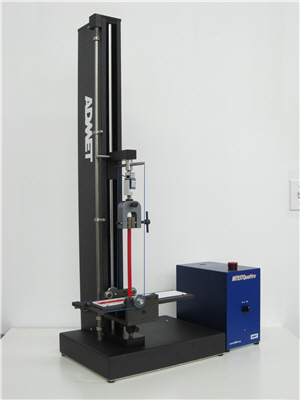
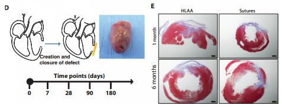
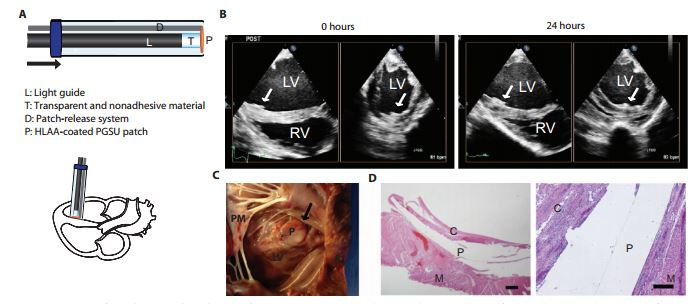
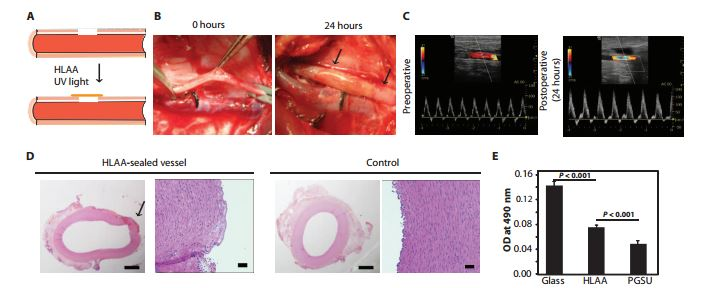
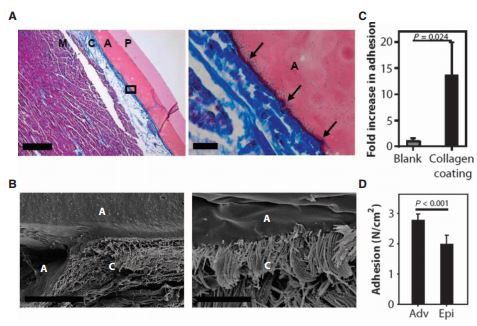

Testing the Glue
Adhesion testing:
The adhesion force of the adhesive was tested on both porcine epicardial Definition The outer layer of heart tissue tissue and a glass surface. The samples were kept wet during the testing by immersing them in saline solutions that were buffered with phosphates. Additionally, they tested the existing solutions, the CA and fibrin sealants, to compare the force required to cause adhesive failure. Prior to testing, the patches were exposed to heparinized Definition Having a substance added to blood to reduce clotting blood. A machine called the ADMET eXpert 7601 universal tester was used to test the adhesive force as shown below:
The results of this experiment showed the the maximum adhesive strength was shown with five seconds of UV exposure at a light intensity of 0.38 W/cm2. Varying the intensity of the UV light was not found to change the adhesive strength of the glue. Additionally, varying the thickness of the glue did not affect the adhesion. The compressive force used to apply the patches in this experiment was selected due to the ability to use the same force in vivo applications. The adhesive was found to be 275% stronger than a commercially available fibrin sealant. Normal adhesive is washed out, or knocked off, when it moves through a blood stream causing a reduction in the adhesive strength. The new glue was found to not have any significant washout after exposure to flowing blood.
Testing in Rats:
Prior to testing in rats, preoperative surgical preparations were performed on the rats. A suture was applied to prevent bleeding during the application of the patch. After that, a 2mm cut across the left ventricle of the rats heart was made. The cut was sealed with a patch and the adhesive and the sutures were removed to test what would happen. In some of the rats, the patch was not applied and a suture was the only thing that sealed the cut.
The above images show an example of the incision in a rat heart as well as stained sections of the area after one month and six months of closure. The procedure was successful in seventeen of the nineteen rats with one additional rat dying from bleeding complications on the fourth day after the operation. These deaths resulted from the inability to center the patch over a fast moving incision in the rat. This is not anticipated to be a significant issue for clinical applications because rat hearts beat six times faster than a human heart. There was a slight reduction in the cardiac function of the area where the patch was applied but there were no significant differences in global cardiac functions.
Testing in Pigs:
The pigs had the same preoperative procedures performed on them as the rats. After that, a thoracotomy, a cutting open of the chest cavity, was performed to expose the heart. The whole operation was performed without cardiopulmonary bypass that takes over the function of the heart and lungs. Patches were then applied with the glue to the ventricular septum. After the surgery. two of the pigs were watched and had an epinephrine bolus applied. The effects of an elevated heart rate on the patch was then measured through echocardiography. The remaining two pigs were only monitored for twenty-four hours.
The above image shows the mechanism used to apply the patch to the hearts of the pig. Additionally, it shows echocardiography scans of the pigs heart after zero hours and twenty-four hours and prepared samples of the heart. The results showed successful attachment to all four pigs. The patch also remained attached during the whole process including during the period of elevated heart rate due to the epinephrine bolus. A fibrin capsule was also found to be formed around the patch.
Carotid Artery Defect Closings:
In vitro burst pressure testing was performed on freshly exported swine carotid arteries. One end of the artery was connected to a pressure transducer that forced blood through the artery while the other was closed with a plug. A three to four millimetre long incision was made in the vessel wall. The incision was only coated with the glue and cured without any pressure applied. The glue was infused with a saline infusion and the burst pressure was recorded.
This image shows how the glue was applied as well as the postoperative scans and the prepared samples of the artery. The researchers found that the glue can be used to create a seal without a patch when used on smaller applications. The average burst pressure in the system was higher than that found in humans. The platelet adhesion to the glue was lower than that of glass which helps lower the risk of the blood clotting.
In Vivo Testing:
Prior to testing, the animals were anaesthetized and an ultrasound was performed to confirm normal blood flow in the pig. The left neck was incised and the carotid artery controlled with vascular clamps. The artery then had a two millimetre incision cut into it which was sealed with the glue. The clamps were released and the artery was inspected to detect any bleeding. After twenty-four hours, an ultrasound was performed to evaluate the blood flow through the artery.
The results were very similar to those found in vitro. It had a similar compatibility to the tissue as fibrin glue and an improved compatibility when compared to the CA glue. It had a smaller infiltration than the CA glue and the cardiac function of the pigs did not change.
Interactions with Tissues:
The researchers tested the interaction between the glue and the skin through freeze fracture tests. These tests begin with the sample to be examined being fixed. Then, the samples were dehydrated. and critical dried, a method commonly used to enable scanning electron microscope imagery of samples. The samples were then analyzed using a scanning electron microscope.
The above image shows the prepared samples on top and the scanning electron microscope images on the bottom. The microscope showed that the glue seemed to merge with the upper layer of cardiac tissue. Upon fracturing, the adhesive remains entangled within the collagen fibers. Despite the similarities in chemical composition, the adhesion strength was higher in the outermost connective tissue of the heart than the internal wall of the heart.